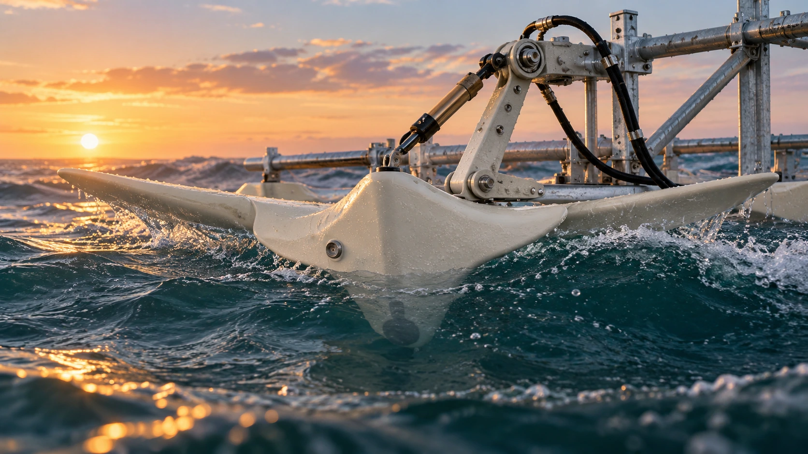

Work with the ocean.
Explore an energy source close to the operations that could use it.

Our mission is to help offshore operations draw power from the sea around them, reducing dependence on transported fossil fuels.
Waveity brings together nature-inspired engineering and laboratory research to explore that possibility.
We bring nature-inspired engineering into the laboratory to explore how ocean motion could support offshore electricity needs.
Explore an energy source close to the operations that could use it.
Use modelling, prototypes and physical experiments to guide development.
Work towards validation with engineering, industry and research partners.